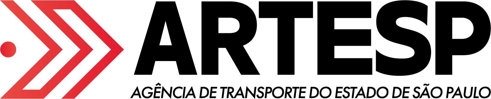

Escritório de Projetos · proposta
Proposta de adoção do OpenProject como ferramenta institucional de acompanhamento de projetos da ARTESP, num escritório de projetos federado.
Proponente: SUTID · outubro de 2026
O problema
grupos por projeto, documentos e conversas
backlog e tarefas de software
cronogramas e controles locais
Não há um portfólio único.
A direção não vê o andamento.
Outras áreas não conseguem contribuir sem solicitar acesso a cada ferramenta.
Levantamento do proponente · outubro de 2026 · relação não exaustiva
A proposta
A SUTID não gerencia os projetos das demais áreas: provê a plataforma em que eles se tornam visíveis.
SUMEF, SUROD, SUADI, SUREF, SUINV, SUSAM, SUCOL, SUHAP · cada uma dona dos seus projetos
Uma plataforma, vários métodos
Portfólio ARTESP · camada comum
atributos do projeto
farol de status
ciclo mensal de situação
acesso de leitura para a direção
SUTID · software
Scrum
backlog
sprints
quadros
SUROD, SUMEF e áreas de obra e contrato
modelo preditivo
fases e marcos
Gantt
controle de mudanças
O Modelo PMO (fases, marcos, controle de mudanças) está disponível para as áreas que optarem por ele. Não é obrigatório: a governança definirá quando se aplica.
Uma plataforma, vários métodos · SUADI, SUREF, SUINV, SUSAM, SUCOL e SUHAP definem o seu
Na prática
SUTID · quadro Scrum
SUROD · cronograma preditivo
Projetos de exemplo criados em homologação · capturas a atualizar
O que todo projeto informa
Objetivo estratégico
Área demandante
Patrocinador
Orçamento previsto
Data de aprovação
No prazo
Em risco
Fora do prazo
Não iniciado
Concluído
Descontinuado
atribuído por critérios objetivos
Projeto transversal: um único registro, um gerente, as demais áreas como participantes · fases, sprints, marcos e quadros são definidos por cada área
Acesso
Em operação. Não há criação de contas adicionais.
Diretoria e patrocinadores têm acesso integral de leitura, sem permissão de edição.
Disponível: o acesso de leitura pode ser vinculado a grupos do diretório, sem gestão manual de membros.
Acesso de leitura amplo; permissão de edição restrita ao próprio projeto.
Situação atual
Dois ambientes disponíveis
Acesso com as credenciais de rede · intranet somente
Por que esta plataforma
sem contratação; o custo é o esforço de operação e apoio, assumido pela SUTID
hospedado na infraestrutura da agência
identidade visual, grupos do AD, quadros, portfólio
credenciais corporativas já existentes
OneDrive/SharePoint e GitLab, passíveis de configuração conforme a necessidade
atualizações mensais
OpenProject · software livre · GPL v3
Como chegar lá
1 · Decisão
a plataforma passa a ser a ferramenta institucional
2 · Entrada
cada área migra seus projetos no seu próprio ritmo, com apoio da SUTID
3 · Governança
o padrão comum evolui com a experiência das áreas
As ferramentas em uso não são descontinuadas de imediato.
Adoção por adesão · sem data de corte para as ferramentas atuais
O que se pede
01
Adotar o OpenProject como ferramenta institucional de acompanhamento de projetos da ARTESP.
A migração é gradual e por adesão. A SUTID mantém a plataforma; cada área mantém o seu método.
Proponente: SUTID · outubro de 2026
Ao vivo
projetos-hom.artesp.sp.gov.br
homologação · projetos de exemplo
projetos.artesp.sp.gov.br
produção
Roteiro
Acesso com as credenciais de rede
| → ← Espaço | avançar e voltar |
| G número Enter | ir ao slide (o número aparece no canto inferior esquerdo) |
| Esc | visão geral de todos os slides; clique em um para abrir |
| F | tela cheia (Esc sai) |
| B | escurecer a tela durante uma pausa |
| ? | abre e fecha esta ajuda |
Também é possível clicar nas setas no canto inferior direito.